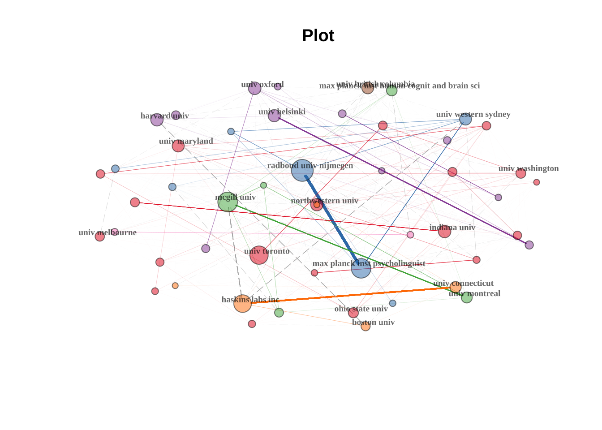
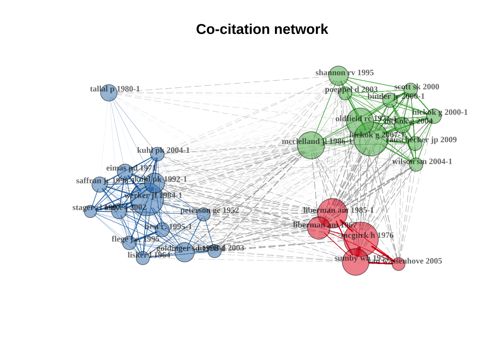
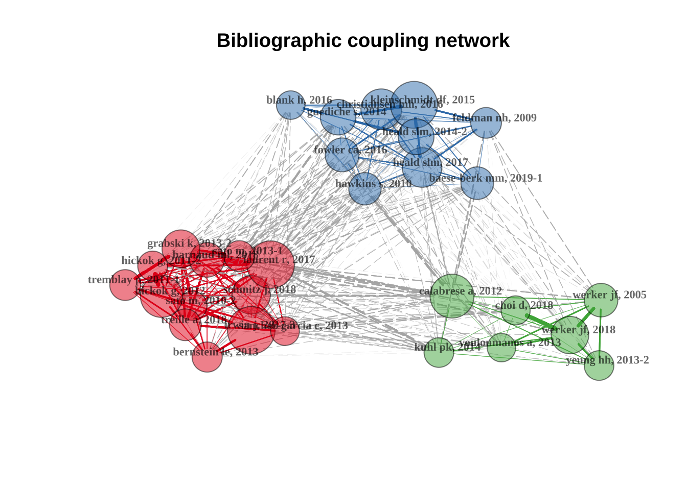
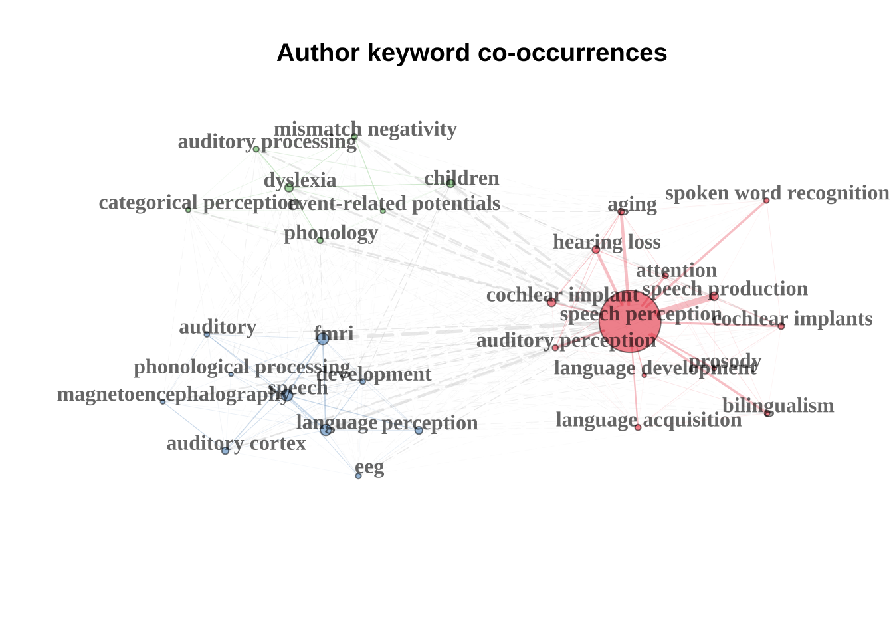

Chapter 14 文献计量研究案例-语音感知
详细背景请看原文献
首先，我们使用Web of Science核心合集进行了主题为“speech perception”（带引号）的搜索，搜索对象为社会科学引文索引（SSCI）、科学引文索引扩展版（SCIE）、新兴资源引文索引（ESCI）中发表的研究文章（文档类型=文章），搜索日期为2021年2月24日。时间跨度设定为2000年至2020年，非英语论文被排除。最初找到了9436篇研究文章。鉴于本次文献计量分析的重点是从语音学/语言学、心理学、神经科学和言语病理学的角度研究言语感知，因此排除了属于Web of Science分类中的耳鼻喉科的纯医学研究（n = 2731）。
这些文章的完整记录和被引用参考文献被下载并通过R语言中的bibliometrix包（Aria 和 Cuccurullo, 2017）进行处理。我们检查了数据集，并移除了数据缺失的文章，这进一步将研究文章的数量减少到6407篇（见图1）。bibliometrix包是用R语言开发的，提供了多种用于综合文献计量分析的功能，并且可以无缝集成其他R包，以实现更高级的数据建模和可视化。我们选择bibliometrix包而非其他软件，是因为它提供了一个更加开放、灵活、可定制且可重复的工作流程。
14.1 数据导入及整理
# read files
filenames = list.files(path = "data/ch14/data-24-02-2021",
pattern = "txt",
full.names = TRUE)
# converting to bibliometric data frame
speech.data = convert2df(filenames,
dbsource = "wos",
format = "plaintext")##
## Converting your wos collection into a bibliographic dataframe
##
## Done!
##
##
## Generating affiliation field tag AU_UN from C1: Done!14.2 数据可视化与展示
14.2.1 语音感知研究概况(2000-2020).
| Description | Results |
|---|---|
| MAIN INFORMATION ABOUT DATA | |
| Timespan | 2000:2020 |
| Sources (Journals, Books, etc) | 725 |
| Documents | 6407 |
| Annual Growth Rate % | 6.11 |
| Document Average Age | 11.4 |
| Average citations per doc | 27.91 |
| Average citations per year per doc | 1.842 |
| References | 129988 |
| DOCUMENT TYPES | |
| article | 6407 |
| DOCUMENT CONTENTS | |
| Keywords Plus (ID) | 7243 |
| Author’s Keywords (DE) | 8001 |
| AUTHORS | |
| Authors | 12381 |
| Author Appearances | 23242 |
| Authors of single-authored docs | 438 |
| AUTHORS COLLABORATION | |
| Single-authored docs | 564 |
| Documents per Author | 0.517 |
| Co-Authors per Doc | 3.63 |
| International co-authorships % | 27.59 |
14.2.2 语音感知研究发表最多的杂志
| Sources | Articles |
|---|---|
| JOURNAL OF THE ACOUSTICAL SOCIETY OF AMERICA | 443 |
| JOURNAL OF SPEECH LANGUAGE AND HEARING RESEARCH | 360 |
| FRONTIERS IN PSYCHOLOGY | 232 |
| PLOS ONE | 190 |
| NEUROIMAGE | 155 |
| BRAIN AND LANGUAGE | 150 |
| JOURNAL OF PHONETICS | 145 |
| NEUROPSYCHOLOGIA | 132 |
| COGNITION | 131 |
| JOURNAL OF EXPERIMENTAL PSYCHOLOGY-HUMAN PERCEPTION AND PERFORMANCE | 100 |
| JOURNAL OF NEUROSCIENCE | 99 |
| SPEECH COMMUNICATION | 98 |
| ATTENTION PERCEPTION & PSYCHOPHYSICS | 94 |
| FRONTIERS IN HUMAN NEUROSCIENCE | 82 |
| JOURNAL OF MEMORY AND LANGUAGE | 81 |
| DEVELOPMENTAL SCIENCE | 74 |
| LANGUAGE AND SPEECH | 74 |
| PROCEEDINGS OF THE NATIONAL ACADEMY OF SCIENCES OF THE UNITED STATES OF AMERICA | 74 |
| CEREBRAL CORTEX | 71 |
| NEUROREPORT | 70 |
14.2.5 语音感知研究数量最高的10个国家（地区） (2000-2020).
SCP = 单一国家发表; MCP = 多个国家合作发表
| Country | Articles | Freq | SCP | MCP | MCP_Ratio |
|---|---|---|---|---|---|
| USA | 2444 | 0.38217 | 2074 | 370 | 0.151 |
| UNITED KINGDOM | 574 | 0.08976 | 405 | 169 | 0.294 |
| CANADA | 462 | 0.07224 | 306 | 156 | 0.338 |
| GERMANY | 399 | 0.06239 | 255 | 144 | 0.361 |
| FRANCE | 310 | 0.04848 | 163 | 147 | 0.474 |
| NETHERLANDS | 301 | 0.04707 | 187 | 114 | 0.379 |
| CHINA | 262 | 0.04097 | 151 | 111 | 0.424 |
| AUSTRALIA | 251 | 0.03925 | 160 | 91 | 0.363 |
| JAPAN | 161 | 0.02518 | 129 | 32 | 0.199 |
| SPAIN | 136 | 0.02127 | 73 | 63 | 0.463 |
| FINLAND | 131 | 0.02048 | 84 | 47 | 0.359 |
| BELGIUM | 107 | 0.01673 | 66 | 41 | 0.383 |
| ITALY | 92 | 0.01439 | 59 | 33 | 0.359 |
| ISRAEL | 79 | 0.01235 | 70 | 9 | 0.114 |
| KOREA | 77 | 0.01204 | 43 | 34 | 0.442 |
| INDIA | 63 | 0.00985 | 55 | 8 | 0.127 |
| SWITZERLAND | 56 | 0.00876 | 25 | 31 | 0.554 |
| NORWAY | 51 | 0.00797 | 30 | 21 | 0.412 |
| BRAZIL | 50 | 0.00782 | 44 | 6 | 0.120 |
| SWEDEN | 47 | 0.00735 | 33 | 14 | 0.298 |
14.2.7 语音感知领域发表量最高20位学者(2000-2020).
| Element | h_index | TC | NP |
|---|---|---|---|
| ACKERMANN H | 18 | 1219 | 30 |
| BIDELMAN GM | 13 | 658 | 26 |
| ESCUDERO P | 14 | 660 | 31 |
| HICKOK G | 22 | 2002 | 30 |
| HOLT LL | 20 | 931 | 35 |
| HUGDAHL K | 21 | 1280 | 33 |
| KRAUS N | 29 | 3232 | 40 |
| MCMURRAY B | 21 | 1671 | 36 |
| MCQUEEN JM | 18 | 956 | 41 |
| MITTERER H | 22 | 1124 | 44 |
| NITTROUER S | 14 | 680 | 30 |
| PISONI DB | 23 | 1944 | 39 |
| POEPPEL D | 19 | 3503 | 28 |
| ROSEN S | 22 | 3177 | 41 |
| SAMUEL AG | 15 | 1159 | 28 |
| SATO M | 15 | 660 | 31 |
| SCHWARTZ JL | 15 | 787 | 34 |
| SOTO-FARACO S | 15 | 842 | 31 |
| STEVENSON RA | 18 | 1292 | 27 |
| WERKER JF | 23 | 2865 | 38 |
14.2.9 合作情况
语音感知研究中最活跃的20所大学/研究机构及其合作网络。网络中的每个节点代表一个不同的大学/研究机构，节点的直径与该机构与其他机构的合作强度成正比。节点之间的连线表示这些大学或研究机构之间的合作路径。

语音感知研究中前20个国家的合作网络。
网络中的每个节点代表一个不同的国家，节点的直径与该国家与其他国家合作的强度成正比。节点之间的连线表示国家之间的合作路径。
14.2.10 研究影响力
最高被引研究
| Researcher | Year | source | DOI | Citations |
|---|---|---|---|---|
| MCGURK H | 1976 | NATURE | DOI 10.1038/264746A0 | 582 |
| WERKER JF | 1984 | INFANT BEHAV DEV | DOI 10.1016/S0163-6383(84)80022-3 | 498 |
| SUMBY WH | 1954 | J ACOUST SOC AM | DOI 10.1121/1.1907309 | 449 |
| HICKOK G | 2007 | NAT REV NEUROSCI | DOI 10.1038/NRN2113 | 441 |
| LIBERMAN AM | 1985 | COGNITION | DOI 10.1016/0010-0277(85)90021-6 | 438 |
| MCCLELLAND JL | 1986 | COGNITIVE PSYCHOL | DOI 10.1016/0010-0285(86)90015-0 | 397 |
| OLDFIELD RC | 1971 | NEUROPSYCHOLOGIA | DOI 10.1016/0028-3932(71)90067-4 | 389 |
| LIBERMAN AM | 1967 | PSYCHOL REV | DOI 10.1037/H0020279 | 328 |
| SHANNON RV | 1995 | SCIENCE | DOI 10.1126/SCIENCE.270.5234.303 | 305 |
| KUHL PK | 1992 | SCIENCE | DOI 10.1126/SCIENCE.1736364 | 298 |
| GOLDINGER SD | 1998 | PSYCHOL REV | DOI 10.1037/0033-295X.105.2.251 | 272 |
| TALLAL P | 1980 | BRAIN LANG | DOI 10.1016/0093-934X(80)90139-X | 231 |
| BEST C. | 1995 | SPEECH PERCEPTION LI | NA | 224 |
| EIMAS PD | 1971 | SCIENCE | DOI 10.1126/SCIENCE.171.3968.303 | 224 |
| FLEGE J.E. | 1995 | SPEECH PERCEPTION LI | NA | 219 |
| NORRIS D | 2003 | COGNITIVE PSYCHOL | DOI 10.1016/S0010-0285(03)00006-9 | 215 |
| BINDER JR | 2000 | CEREB CORTEX | DOI 10.1093/CERCOR/10.5.512 | 213 |
| HICKOK G | 2004 | COGNITION | DOI 10.1016/J.COGNITION.2003.10.011 | 207 |
| LISKER L | 1964 | WORD | DOI 10.1080/00437956.1964.11659830 | 203 |
| SCOTT SK | 2000 | BRAIN | DOI 10.1093/BRAIN/123.12.2400 | 203 |
语音感知高被引作者
| Authors | Citations |
|---|---|
| KUHL PK | 1994 |
| WERKER JF | 1693 |
| HICKOK G | 1433 |
| LIBERMAN AM | 1347 |
| NAATANEN R | 1268 |
| TALLAL P | 1126 |
| BOERSMA P | 872 |
| FLEGE JE | 844 |
| NITTROUER S | 790 |
| JUSCZYK PW | 784 |
| CUTLER A | 759 |
| ZATORRE RJ | 758 |
| BEST CT | 726 |
| NORRIS D | 713 |
| SCOTT SK | 664 |
| BRADLOW AR | 653 |
| FOWLER CA | 634 |
| PISONI DB | 633 |
| MCCLELLAND JL | 631 |
| BINDER JR | 604 |
语音感知研究的共引网络。节点代表研究文章。每个节点的标签颜色与其所在的集群相同，节点的大小与其共引度成正比。
| vertex | cluster | btw_centrality | clos_centrality | pagerank_centrality | |
|---|---|---|---|---|---|
| 1 | mcgurk h 1976 | 1 | 15.2635617 | 0.0303030 | 0.0480495 |
| 3 | sumby wh 1954 | 1 | 9.5227885 | 0.0303030 | 0.0420926 |
| 5 | liberman am 1985-1 | 1 | 40.9724291 | 0.0303030 | 0.0334798 |
| 8 | liberman am 1967 | 1 | 33.2167686 | 0.0303030 | 0.0276759 |
| 25 | van wassenhove 2005 | 1 | 4.0447249 | 0.0303030 | 0.0244103 |
| 2 | werker jf 1984-1 | 2 | 1.2448940 | 0.0238095 | 0.0714746 |
| 10 | kuhl pk 1992-1 | 2 | 0.9467332 | 0.0238095 | 0.0526162 |
| 11 | goldinger sd 1998-1 | 2 | 1.7304269 | 0.0238095 | 0.0270523 |
| 12 | tallal p 1980-1 | 2 | 0.6760632 | 0.0232558 | 0.0090834 |
| 13 | eimas pd 1971 | 2 | 0.7466488 | 0.0238095 | 0.0367231 |
| 14 | best c. 1995-1 | 2 | 0.3031579 | 0.0238095 | 0.0290432 |
| 15 | flege j.e. 1995 | 2 | 0.1627206 | 0.0227273 | 0.0288952 |
| 16 | norris d 2003 | 2 | 1.6333429 | 0.0238095 | 0.0209435 |
| 19 | lisker l 1964 | 2 | 0.9477373 | 0.0238095 | 0.0251291 |
| 20 | peterson ge 1952 | 2 | 1.1605696 | 0.0238095 | 0.0206468 |
| 22 | maye j 2002 | 2 | 0.2124056 | 0.0238095 | 0.0426923 |
| 23 | saffran jr 1996-1 | 2 | 0.3801173 | 0.0238095 | 0.0302510 |
| 27 | stager cl 1997 | 2 | 0.1064318 | 0.0232558 | 0.0327461 |
| 28 | kuhl pk 2004-1 | 2 | 0.9889261 | 0.0238095 | 0.0278373 |
| 4 | hickok g 2007-1 | 3 | 8.1022227 | 0.0256410 | 0.0622358 |
| 6 | mcclelland jl 1986-1 | 3 | 20.3301412 | 0.0256410 | 0.0221149 |
| 7 | oldfield rc 1971-1 | 3 | 3.6281583 | 0.0256410 | 0.0340063 |
| 9 | shannon rv 1995 | 3 | 3.8120309 | 0.0256410 | 0.0204179 |
| 17 | binder jr 2000-1 | 3 | 0.9234015 | 0.0256410 | 0.0371099 |
| 18 | hickok g 2004 | 3 | 1.7757471 | 0.0256410 | 0.0388617 |
| 21 | scott sk 2000 | 3 | 0.8692364 | 0.0250000 | 0.0369853 |
| 24 | hickok g 2000-1 | 3 | 1.3611736 | 0.0256410 | 0.0360646 |
| 26 | wilson sm 2004-1 | 3 | 2.5644671 | 0.0256410 | 0.0266347 |
| 29 | poeppel d 2003 | 3 | 1.3686819 | 0.0250000 | 0.0235652 |
| 30 | rauschecker jp 2009 | 3 | 1.0042912 | 0.0243902 | 0.0311617 |
语音感知研究的文献耦合网络，其中节点代表研究文章。每个节点的标签颜色与其所在的集群相同，节点的大小与其文献耦合度成正比。
| vertex | cluster | btw_centrality | clos_centrality | pagerank_centrality | |
|---|---|---|---|---|---|
| 1 | sato m, 2010-2 | 1 | 0.7164865 | 0.0222222 | 0.0422785 |
| 7 | barnaud ml, 2018 | 1 | 2.9212251 | 0.0232558 | 0.0478014 |
| 9 | treille a, 2018 | 1 | 1.0317870 | 0.0217391 | 0.0412177 |
| 10 | schmitz j, 2018 | 1 | 3.8122417 | 0.0232558 | 0.0318383 |
| 11 | laurent r, 2017 | 1 | 18.0738573 | 0.0243902 | 0.0499274 |
| 13 | irwin j, 2017-3 | 1 | 6.2482815 | 0.0243902 | 0.0344240 |
| 21 | sato m, 2013-1 | 1 | 5.5514049 | 0.0238095 | 0.0312268 |
| 23 | grabski k, 2013-2 | 1 | 1.7199251 | 0.0222222 | 0.0511367 |
| 24 | sanchez-garcia c, 2013 | 1 | 4.6155264 | 0.0243902 | 0.0291568 |
| 26 | bernstein le, 2013 | 1 | 2.2834294 | 0.0227273 | 0.0248360 |
| 27 | hickok g, 2012 | 1 | 3.3007337 | 0.0227273 | 0.0386245 |
| 29 | tremblay p, 2011-1 | 1 | 0.6086756 | 0.0222222 | 0.0358885 |
| 30 | hickok g, 2011-2 | 1 | 1.2554936 | 0.0222222 | 0.0429051 |
| 2 | hawkins s, 2010 | 2 | 9.3703836 | 0.0263158 | 0.0239215 |
| 3 | feldman nh, 2009 | 2 | 3.8011565 | 0.0232558 | 0.0258212 |
| 5 | baese-berk mm, 2019-1 | 2 | 9.3727377 | 0.0263158 | 0.0207865 |
| 12 | heald slm, 2017 | 2 | 11.2805244 | 0.0263158 | 0.0401531 |
| 14 | blank h, 2016 | 2 | 4.0603971 | 0.0238095 | 0.0235782 |
| 15 | fowler ca, 2016 | 2 | 8.9413695 | 0.0256410 | 0.0262904 |
| 16 | christiansen mh, 2016 | 2 | 6.4460889 | 0.0256410 | 0.0307733 |
| 17 | kleinschmidt df, 2015 | 2 | 7.8949937 | 0.0263158 | 0.0449141 |
| 19 | heald slm, 2014-2 | 2 | 8.2948035 | 0.0263158 | 0.0367782 |
| 20 | guediche s, 2014 | 2 | 6.5318437 | 0.0243902 | 0.0354950 |
| 4 | werker jf, 2005 | 3 | 1.3277236 | 0.0217391 | 0.0310011 |
| 6 | choi d, 2018 | 3 | 6.3736653 | 0.0285714 | 0.0271317 |
| 8 | werker jf, 2018 | 3 | 1.1648052 | 0.0222222 | 0.0442706 |
| 18 | kuhl pk, 2014 | 3 | 15.1309787 | 0.0277778 | 0.0193553 |
| 22 | vouloumanos a, 2013 | 3 | 5.9773141 | 0.0285714 | 0.0219283 |
| 25 | yeung hh, 2013-2 | 3 | 0.8147466 | 0.0212766 | 0.0247105 |
| 28 | calabrese a, 2012 | 3 | 25.0774001 | 0.0285714 | 0.0218293 |
前20个作者定义关键词、机器生成关键词、基于标题和摘要的两词短语（Freq = 频率）注意：在论文表格中，一些术语进行了合并处理，例如在标题两词短语列中，“Cochlear implant”（人工耳蜗）和“cochlear implantation”（人工耳蜗植入）被合并。
| AuthorKeywords | AuFreq | MachineKeywords | MFreq | Title2gram | TFreq | Abstract2gram | ABFreq |
|---|---|---|---|---|---|---|---|
| Cochlearimplant | 251 | Recognition | 783 | Cochlearimplant | 408 | Hearingloss | 950 |
| Fmri | 199 | Discrimination | 746 | Hearingloss | 155 | Normalhearing | 840 |
| Dyslexia | 161 | Children | 653 | Wordrecognition | 132 | Cochlearimplant | 587 |
| Speechproduction | 158 | Information | 525 | Audiovisualspeech | 117 | Speechsounds | 587 |
| Children | 139 | Noise | 418 | Spokenword | 97 | Auditorycortex | 541 |
| Hearingloss | 129 | Identification | 396 | Auditoryprocessing | 93 | Wordrecognition | 535 |
| Aging | 116 | Acquisition | 378 | Auditorycortex | 91 | Auditoryprocessing | 515 |
| Spokenwordrecognition | 112 | English | 368 | Visualspeech | 91 | Superiortemporal | 509 |
| Auditorycortex | 104 | Brain | 363 | Cochlearimplantation | 87 | Speechproduction | 494 |
| Phonology | 101 | Intelligibility | 336 | Implantusers | 82 | Visualspeech | 465 |
| Auditoryperception | 98 | Integration | 326 | Eventrelated | 71 | Speechprocessing | 460 |
| Auditoryprocessing | 98 | Infants | 307 | Speechprocessing | 70 | Speechrecognition | 448 |
| Languageacquisition | 94 | Adults | 305 | Developmentaldyslexia | 64 | Nativelanguage | 439 |
| Mismatchnegativity | 93 | Workingmemory | 300 | Normalhearing | 64 | Eventrelated | 427 |
| Bilingualism | 90 | Activation | 296 | Wordlearning | 64 | Cochlearimplant | 409 |
| Attention | 85 | Age | 296 | Languageimpairment | 62 | Acousticalsociety | 399 |
| Eeg | 84 | Comprehension | 295 | Speechrecognition | 61 | Ciusers | 347 |
| Eventrelatedpotentials | 82 | Hearing | 294 | Specificlanguage | 60 | Currentstudy | 342 |
| Audiovisual | 80 | Cortex | 288 | Audiovisual | 58 | Findingssuggest | 314 |
| Multisensoryintegration | 80 | Attention | 285 | Speechproduction | 58 | Phonologicalawareness | 311 |
| Development | 78 | Developmentaldyslexia | 276 | Verticalbar | 56 | Audiovisualspeech | 305 |
| Perceptuallearning | 78 | Auditorycortex | 264 | Fmristudy | 53 | Montholds | 300 |
| Auditory | 75 | Model | 258 | Individualdifferences | 53 | Speechintelligibility | 293 |
| Prosody | 73 | Sounds | 251 | Temporalprocessing | 53 | Speechsignal | 289 |
作者自定义词网络
